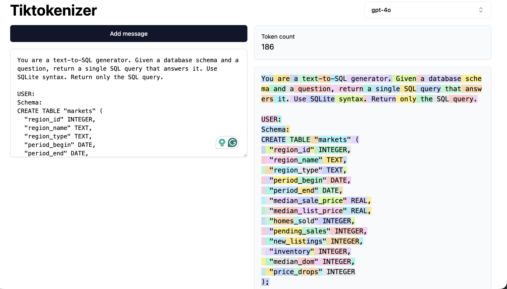
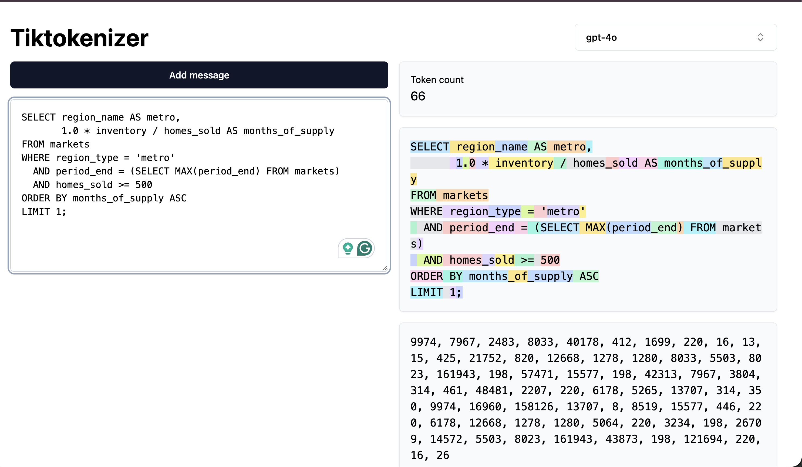
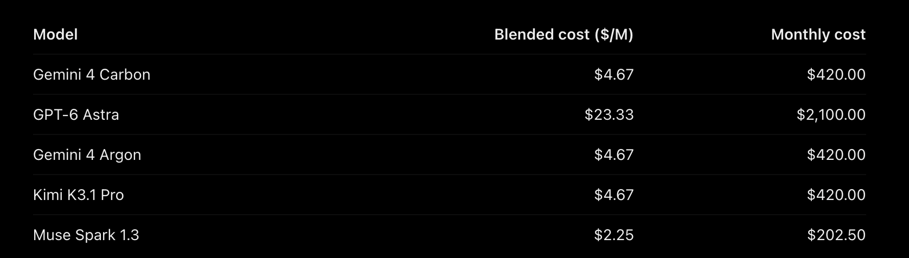
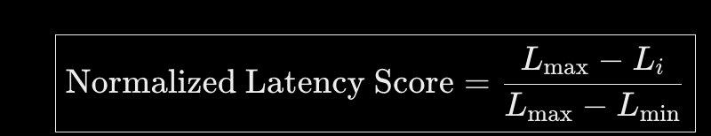
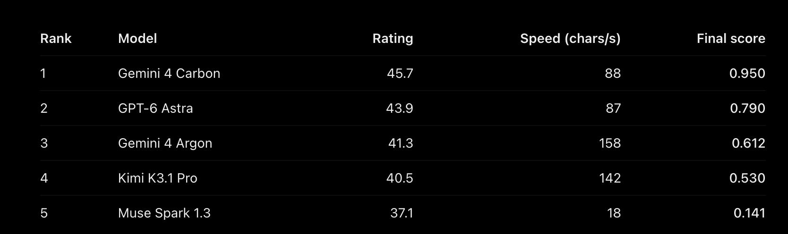

Running Custom Model Evals — Text-to-SQL Case Study (Housing Data)
Imagine a housing analytics app inspired by Redfin / Zillow. Users ask questions in plain English. The system must turn each question into SQL, run it on a database, and return the correct answer.
Example questions
Task name: Text-to-SQL → select the best model for this task.
| Requirement | Case-study decision | Why it matters |
|---|---|---|
| Task | Text-to-SQL | Evaluate execution accuracy, not “sounds good” |
| Cost | Ceiling ≈ $1,000 / month (confirm with PM) | Great models can still be unaffordable |
| Latency | ≤ 3 seconds | Heavy reasoning models may be too slow |
| Context | Mostly single-turn (no session history) | Schema + question is usually enough |
| Deployment | Open-source or closed-source | Privacy may force self-hosting |
| Correctness | Critical | Wrong numbers → screenshots → bad PR |
The “best” model on a public leaderboard is not automatically the right model for your app.
Freeze one prompt so every model is tested fairly.
You are a text-to-SQL generator. Given a database schema and a question, return a single SQL query that answers it. Use SQLite syntax. Return only the SQL query.
Schema: CREATE TABLE "markets" ( "region_id" INTEGER, "region_name" TEXT, "region_type" TEXT, "period_begin" DATE, "period_end" DATE, "median_sale_price" REAL, "median_list_price" REAL, "homes_sold" INTEGER, "pending_sales" INTEGER, "new_listings" INTEGER, "inventory" INTEGER, "median_dom" INTEGER, "price_drops" INTEGER ); Question: Which metro has the lowest months of supply among metros with at least 500 homes sold in the latest month? Months of supply = active listings divided by homes sold. Give the metro and the months of supply. SQL:
SELECT region_name AS metro,
1.0 * inventory / homes_sold AS months_of_supply
FROM markets
WHERE region_type = 'metro'
AND period_end = (SELECT MAX(period_end) FROM markets)
AND homes_sold >= 500
ORDER BY months_of_supply ASC
LIMIT 1;
Go to https://tiktokenizer.vercel.app/ and count tokens for the input prompt and the output SQL.


| Piece | Measured | Planning estimate |
|---|---|---|
| Input prompt | ~186 | ~200 |
| Output SQL | ~66 | ~100 |
| Total per request | ~252 | ~300 |
Traffic assumption
Example pricing used in class notes: input $8 / MTok, output $40 / MTok.
import anthropic
client = anthropic.Anthropic()
response = client.messages.create(
model="claude-sonnet-4-5", # replace with the model under test
max_tokens=1024,
system=[{
"type": "text",
"text": "Long reusable system instructions + schema go here...",
"cache_control": {"type": "ephemeral", "ttl": "1h"},
}],
messages=[{
"role": "user",
"content": "Which metro has the lowest months of supply ...?",
}],
)
print(response.usage)
Near the ceiling → shortlist cheaper models and/or reduce tokens.
Public leaderboards help you shortlist. They do not replace your eval.
Your shortlist cost sheet (from class notes):

We are going to test the models that fit the budget and see what comes out on quality + latency.


Public boards answer: “Who is good at SQL somewhere?” Custom evals answer: “Who is good on our schema, questions, and budget?”
Minimum harness — for each model:
match / mismatch / sql_errorSuggested deliverables